Gao, el escultor de la obra de Tezuka, recorre seis fases de abajo arriba hasta llegar a los torii, las puertas que llevan a la sala de cada fase. El mapa sube solo mientras avanzas y los lados no acaban nunca.
Todas las imágenes de esta página están dibujadas desde los bytes de la ROM con las herramientas de tools/, que siguen los pasos del propio cartucho. Debajo de cada una se dice de qué tabla sale y cómo se ha cotejado contra openMSX (MSX2, C-BIOS_MSX2_JP).
El logotipo son 52 letras de 1 bit del banco 9 (p09:AB3C, ABA4 y AC0C) que p00:4ED7 sube a la página 1 en tres colores, y que p01:6710 compone con la lista de p01:675E; luego p01:66F0 lo destapa de arriba abajo con HMMM. Cotejado contra openMSX: 0 bytes distintos.
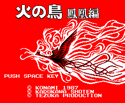
El título es una hoja de dibujos (las listas de p04:6443, 6458 y 6468) pintada con los mapas de p13:7640 y p13:79A0 (32 × 18) y el rótulo 火の鳥 鳳凰編 (p13:7D00 y 7D30) encima con el color 0 transparente; los textos, con la letra de la hoja (p00:4F87). Cotejado: 0 bytes distintos y los 16 colores de p00:5BE9.
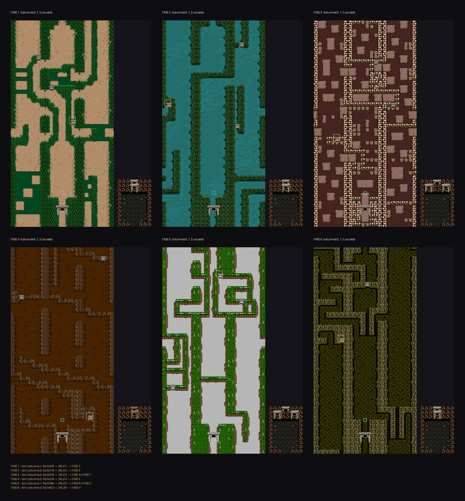
Cada fase son tres columnas de 256 × 1.536 puntos, una al lado de otra, y una sala aparte. Por los lados, las columnas dan la vuelta (p01:653A: de la 2 se pasa a la 0 y al revés); por arriba, el mapa vuelve a empezar. Las 24 áreas (0xC480) son 3 × 6 columnas y 6 salas, y la tabla p01:660B da la fase, el juego de dibujos y la columna de cada una.
Un mapa es una lista de superfilas (una por cada 32 puntos de alto, p00:597B); cada superfila son ocho bloques de 4 × 4 dibujos (p00:594B, p00:593B); y cada dibujo, uno de los 256 de la hoja de la página 1 de la VRAM, que suben las listas del banco 4 con ocho formatos (4 bits tal cual, 1, 2 o 3 bits con paleta, y los cuatro al revés, p00:54CC).
Las puertas son cosas del camino: la de tipo 4 es el torii de cada fase y la de tipo 5 la salida de la sala. Las dos llevan un número, y p01:607C lee la puerta de p09:A269: el área, la fila y el sitio de llegada. El camino que sale de la tabla:
| de | por | a |
|---|---|---|
| fase 1 | torii de la columna 1, fila 0x64 | sala 1 |
| sala 1 | su torii | fase 2 |
| fase 2 | torii de la columna 0, fila 0x74 | sala 2 |
| sala 2 | su torii | fase 3 |
| fase 3 | torii de la columna 0, fila 0x54 | sala 3 |
| sala 3 | torii de la izquierda / de la derecha | fase 4 / fase 1 |
| fase 4 | torii de la columna 2, fila 0x24 | sala 4 |
| sala 4 | su torii | fase 5 |
| fase 5 | torii de la columna 1, fila 0xA8 | sala 5 |
| sala 5 | torii de la izquierda / de la derecha | fase 6 / fase 2 |
| fase 6 | torii de la columna 0, fila 0x6C | sala 6 |
| sala 6 | su torii | fase 4 |
Se entra siempre por la columna 1, en la fila 0x1F. Sale de las tablas; no lo hemos recorrido jugando. Una lámina por fase, a tamaño real:
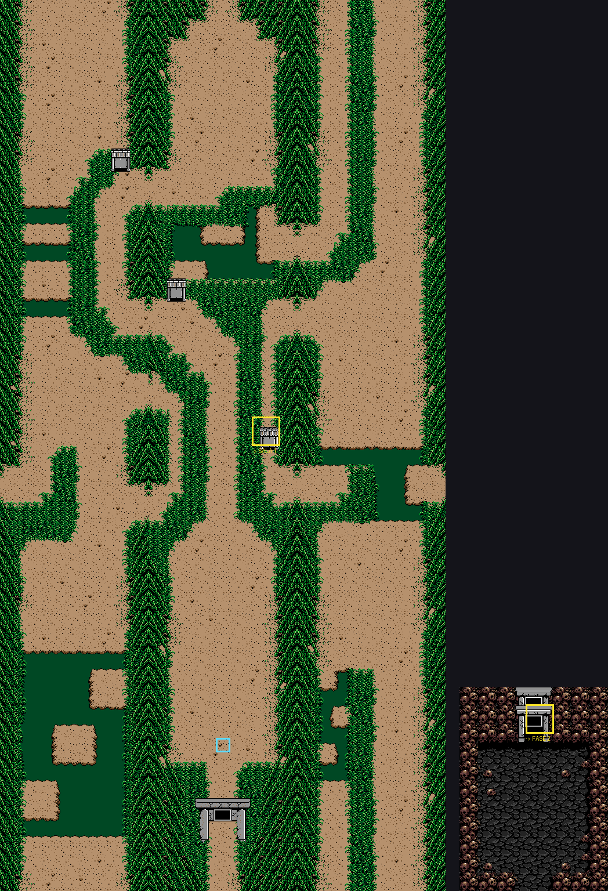
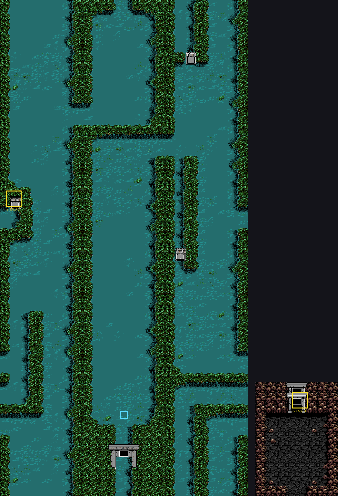
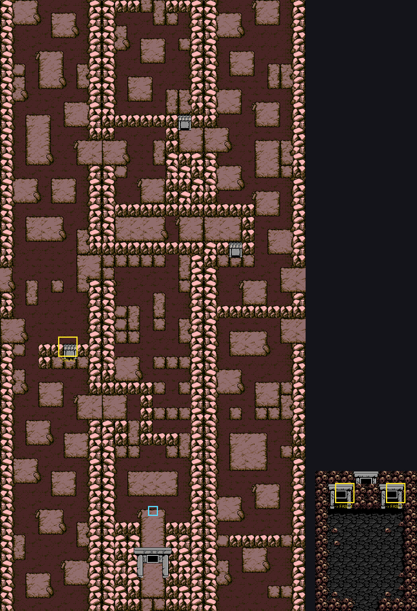
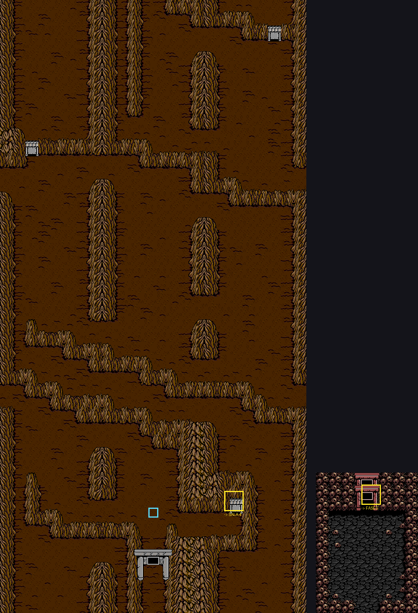
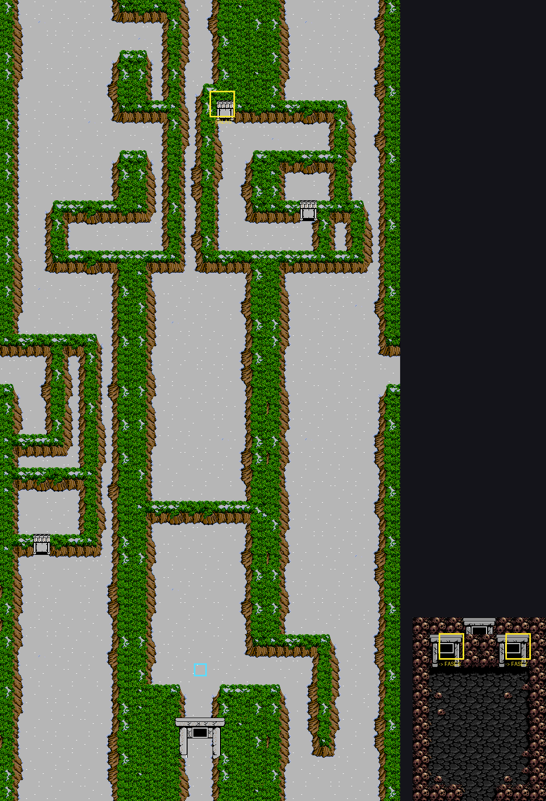
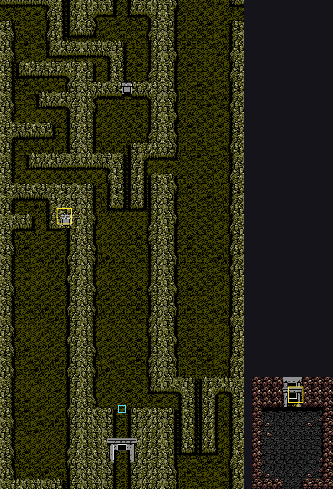
Cotejo: la hoja de dibujos y la paleta de las áreas 0 y 1, volcadas en openMSX al acabar de montarlas (p00:5D6E), son idénticas: 189 y 225 dibujos, 0 distintos, y los 16 colores. En pantalla, en tres volcados de tres áreas, cada fila de la página 0 se ha buscado por sus puntos en el mapa dibujado: bajando por la pantalla, el mapa baja de una en una (25 de 25, 31 de 31 y 31 de 31 filas seguidas).
Corregido el 30 de septiembre de 2026: la primera versión de estos mapas tenía las cuatro filas de cada bloque de 32 puntos del revés. El cotejo de entonces solo miraba que cada fila estuviera en la pantalla, no en qué orden; ahora mira el orden.
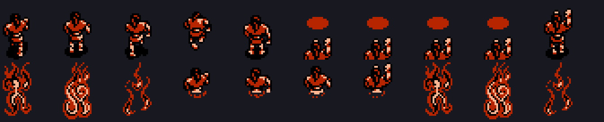
Cada pose son dos sprites de 16 × 16 (arriba y abajo), y cada uno, dos patrones que se ponen uno encima de otro con la mezcla OR del V9938: los colores 13 y 14 y, donde se juntan, el 15. p02:93D6 sube los dos de la pose 0xC81C desde p06:A0BB.
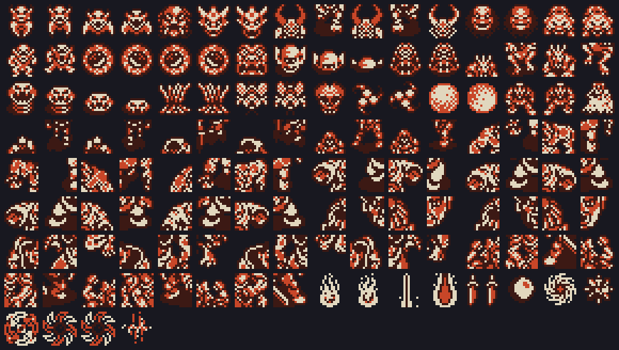
Cada área carga en los patrones de sprite las cosas que va a usar (p07:6000 + 2 × área, pares [cosa][sitio]); las 41 cosas de p07:6173 son RLE o bytes tal cual. Aquí están los 132 sprites de dos capas: los enemigos, los jefes a trozos y lo que lanzan. El color lo pone cada bicho al moverse, así que van en dos tonos.
Qué bicho sale y cuándo lo dice el banco 9: p09:A162 da la lista de cada área ([fila][tipo][dato], p01:6CFC) y p09:A186, qué tipos salen en cada tramo de 32 filas. Hay 58 tipos de bicho, cada uno con su rutina de nacer (p01:6E80) y de moverse (p01:6875).
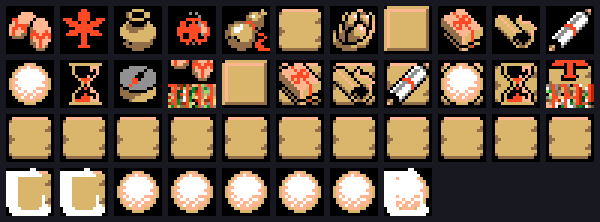
Son 41, con su cuenta en 0xC850 + 4 × (objeto − 1). La ventana ITEM INFORMATION (F3, p06:BAC2) los pinta con p01:7B60: iconos de 16 × 16 de la hoja; del 16 en adelante, un icono encima de un fondo. F5 enseña el mapa de las fases y, con el objeto 14, deja saltar a otra (p02:8555).
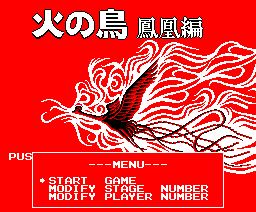
Con Q*bert o el Game Master en otra ranura, ESPACIO en el título abre este menú (p00:4705): START GAME, MODIFY STAGE NUMBER y MODIFY PLAYER NUMBER. Visto en openMSX con Q*bert y montado desde la ROM: 0 bytes distintos.
p14:9C47 tiene 120 entradas, una por sonido y canal; las piezas de varios canales ocupan varias seguidas. Las pistas están en los bancos 14 y 15, con notas, órdenes de octava, tempo, volumen, vibrato y repeticiones (p14:94FA).